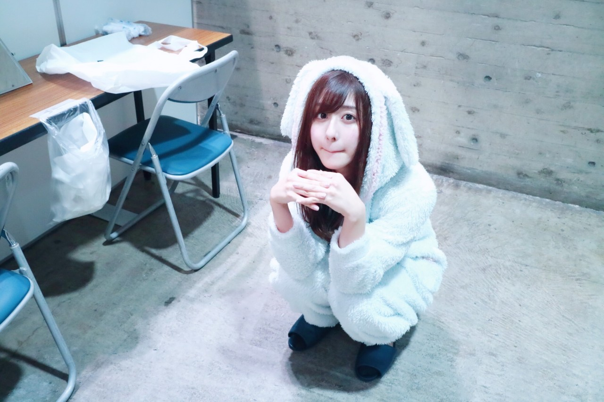

| 2017/04 11 Tue | 春メロ |
ちはるーむへようこそ
今日のちはるーむではみんなで新しい長靴を履いて鼻歌を歌って散歩しました。
今日はガッツポーズの日。
1974年のこの日、ボクシングWBCライト級タイトルマッチで挑戦者のガッツ石松さんがKO勝ちし、その時にしたポーズが「ガッツポーズ」と名付けられたんですって。
凄い！！！
名付けた記者の方も凄いけど
ガッツポーズの由来となったガッツ石松さんも凄い！！
それが今日なんだって。

スモーキーピンク
沈金の時、
間違えてサーモンピンクって言ってしまって
言い直そうと思ったら
スモークサーモンって言っちゃった気がする( ¯−¯ )
スモークサーモンって
スモークサーモンじゃんね！
！ChihAnswer！
 あつみさん
あつみさん
・今メンバーで髪の毛を短くしている人が増えていますが、ちーちゃんも短くしたいですか？
→私は切る予定ないな〜！
長いのが気に入ってるし、
短いのより長いのが自分的には良い気がする
顔の形とか顔のパーツの配置とか
色々な問題も考えて！
顔が小さくて丸顔な方が
ショートは似合うと思うの
ちかびっしゅさん
・個人PV見て思ったんだけど、そもそも何でリボンできるの？
→小学生の頃に新体操を
習っていたからだよ〜！
新体操でリボンやボール、フラフープの
演技をしていたの
他にもバトンを習っていたこともあるから
バトンもお家にあるよ！
今はもうくるくる回せるくらいしか出来ないけど...笑
まみむめももんが！さん
・ちーちゃん的にはライブのときどんなレスがしやすいとかありますか？
→手振って！とか、
指差して！とかは一番やりやすいかな◎
あとはズッキュンして！とか
びーむちょうだい！とかは
恥ずかしいけど見つけたらするよ！
皆さんに沢山レス返したいっ
にっこまさん
・こんどのアンダーライブ行きますが、コールは「ちはる」でいいのかな？
→はい！今回も是非、「ちはる」で
宜しくお願い致します。
皆さんの声がぴったり合う瞬間が好きです
曲中のコールは「ちはる〜！」って叫んでね！
ちなみにサイリウムの色は
赤と青です☺︎
としとしとっしーさん
・「今日のひとこと」コーナーが始まってから気になっていたのですが、ひとことは、本当にその日にやったことですか？それとも、架空のものか、ランダムですか？
→かりんにもそれ聞かれた！！笑
"架空の"ちはるーむでは実際に起こっていることですよ〜☺︎笑
でも大体は実際にわたしがやった事ややりたいと思っていることを書いてます
今日はここまで〜
皆さんいつもありがとう☺︎

鼻の下のびてる
たまにやっちゃうこの顔
------------------------------------------------♡
♬ ChihaMusic
「春のメロディー」乃木坂46
今日とっても寒くて、
明日からはあったかくなるって
この曲の事じゃん！と、
選んだ後に気付きました
"明日の朝から暖かくなるよって
手柄みたいに"
びっくりしたよ〜ぴったりだよ〜
そして私はこの歌詞が好き。
"長かった冬 雲たちは遠ざかり 太陽が射す"
春の訪れを感じられるし
暖かい気持ちになれる。
本当に今日は冬だったね〜
桜は咲いているのに
マフラーしたり冬物のコート着たり
不思議な感じだったな
明日からは暖かくなるねヽ(；；)丿
良かった
おやすみ
斎藤ちはる
コメント(218)
2017/04/11 23:54